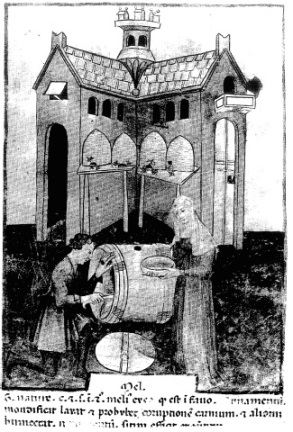

ŞEKİL 50. El-Zehravî’nin Çeşitli Keyif Verici ve Şifalı Maddelerin Doğası Üzerine Gözlemler adlı eserinin 15. yüzyıl ilk yarısında İtalya’da yapılan çevirisinden balın özellikleri, etkileri, yan etkileri ve yan etkilere karşı kullanılacak maddelerle ilgili resimli bir sayfa (Bibliothèque Nationale de France, Paris).45
Türklerde İslâm Öncesi Orta Asya Dönemi: Bu döneme ait bilgiler azdır. 20. yüzyıl başlarında yapılan araştırmalarda Uygur tıp ve eczacılığına ilişkin kimi bilgiler edinilmiştir. Bu metinlere göre Uygurların kullandıkları bitkisel eczalar arasında kaya tuzu, üstübeç, nışadır gibi maddeler bulunuyordu. Ayrıca et suyu, yoğurt, süt, bal, çeşitli hayvan safraları, kirpi derisi, yılan derisi gibi çok miktarda hayvansal ecza da kullanılıyordu. Uygurların hayvansal eczaları diğer uygarlıklara oranla çok daha yaygın kullanmaları, Türklerin hayvancılıkla olan yakın ilişkisi ile açıklanabilir. Uygurların fitil, merhem, pastil, toz, macun vb. hazırlamayı bildikleri anlaşılmaktadır. Ayrıca ilacın veriliş zamanı (“yara şişmeden önce”, “üç sabah aç karnına” gibi), dozu (“kaşık ucu”, “bıçak ucu”, “mercimek kadar” gibi) ve ilacın uygulanacağı bölgeler konusunda çok dikkatliydiler. Bu maddî tedavi yöntemlerinin yanı sıra büyü ve sihir yoluyla da tedavi yapılıyordu. 11. yüzyıl yazarı Yusuf Has Hâcib’in Kutadgu Bilig (Kutlu Bilgi / Mutluluk Bilgisi) (1069) adlı eserinden öğrenildiğine göre böylesi tedavi ile uğraşanlara “efsuncu” denilmekteydi.
Selçuklu Türkleri Dönemi: Büyük çoğunluğunu Oğuzların oluşturduğu Türk boylarınca 1038’de kurulan Selçuklu Devleti, 1092’de Sultan Melikşah’ın (1052-1092) ölümünden sonra Kirman, Suriye, Irak-Horasan ve Anadolu Selçukluları (1071-1308) olarak parçalanarak devam etmiştir. Selçuklu döneminde konu ile ilgili olarak yazılan eserlerin en önemlisi, Zeyneddin bin Cürcanî’nin (ölm. 1136) Farsça kaleme aldığı Zahire-i Harzemşahi adlı eseridir. Anadolu Selçuklu Devleti’nin 1308’de yıkılmasıyla başlayan Beylikler döneminde, konu ile ilgili eserler arasında ise, Aydınoğlu Umur Bey (ölm. 1339) adına Gerede’li İshak bin Murad (14. yüzyıl sonu) tarafından yapılmış olan İbn el-Baytar’ın Kitab el-Câmi li-Müfredat el-Edviye ve’l-Agdiye‘sinin ve Ali ibn Abbas el-Mecûsî’nin (“Haly Abbas”) (ölm. 994) Kâmil el-Sınaat el-Tıbbiye’sinin Türkçe’ye çevirileri önemlidir.
Osmanlı Dönemi: Osmanlı hastanelerinde Selçuklu hastanelerinde olduğu gibi hastane eczanelerine ecza sağlama ve ilaç hazırlama işleri ile görevli uzman kişiler bulunuyordu. Bu hastanelerin vakfiyelerinden, eczacıların “aşşâb” adı altında ayrı bir meslek grubu olduğunu, ayrıca “tabbâh”, “edviye-kûb” gibi çeşitli yardımcı görevlilerin de bulunduğunu öğreniyoruz. Hastanenin dışında ise, hekimin yazdığı terkipleri hazırlayan ya da halkın doğrudan doğruya ilaç gereksinimini gideren aktar (Ar.”attar”, ecza tüccarı) esnafı vardı. Aktarlar ilaç yapımında kullanılan bitkisel, hayvansal ve madensel ilkel maddelerin yanı sıra çeşitli baharat da satardı. Bu işlerle uğraşan daha başka esnafın varlığını da Evliya Çelebi’den (1611-1685) öğreniyoruz. Evliya Çelebi 17. yüzyılın ortalarında İstanbul’da eczacılıkla ilgili meslek gruplarını şöyle sınıflandırır: Göz hastalıklarının tedavisinde ya da sürme olarak kullanılan ve genellikle çinko bileşiği olan malzemeyi hazırlayıp satan tutyacılar (“tutyacıyan”), macuncular (“esnaf-ı macuncuyan”), çeşitli devaların suyunu çıkaranlar (“esnaf-ı meşrubat-ı devâ”), gülsuyu ve diğer hoş kokulu sular satanlar (“esnaf-ı gülâbcıyan”), çeşitli devaların yağını çıkaranlar (“esnaf-ı edhan-ı edviye”). Tutya (Fars. “tûtiya”), İran’da Isfahan’daki bir köyün adı olan “Tutiya”dan gelir ve göze çekilen sürme anlamındadır. Sürmenin ilk kez Tutiya’da bulunup oradan yayıldığı, zamanla da köyün adıyla anılır olduğu söylenir. 98 Tutyanın Farsça duman anlamına “dûd”dan türediği de ileri sürülmektedir. Tutya, genelde pirinç alaşımı elde edilmesinde olduğu gibi karbonat türü çinko cevherleri (“galmei”, kalamintaşı, ZnCO3) ile çalışırken fırındaki atık gazların içinden ayrılarak toz halinde yere çöken çinko oksitten (ZnO) kazanılır ve “çinko çiçekleri”, “filozof yünü”, “kan beyazı” (Alm. “Blutenweiss”) gibi adlar da verilir. Latince’de gri renkli ve saf olmayan türüne “tutia”, beyaz ve temiz olanına “nihil album” (“daha beyazı bulunmayan”) adı verilir ve genellikle göz hastalıklarının tedavisinde ya da sürme olarak kullanılırdı.
Osmanlı tıbbında 18. yüzyılda Paracelsus’tan yapılan çevirilerle ülkeye giren “tıbb-ı cedid” (yeni tıp) akımı, madensel eczalarla tedaviyi yaygınlaştırdı. Hattâ birçoğu zehirli olan madensel eczalarla cahilce yapılan tedavilerden halkın zarar görmesi üzerine “tıbb-ı cedid”in uygulanmasını sınırlayan yasaklamalar çıkmıştı. Aynı şekilde yine bu yüzyılda yüksek rütbeli kişiler için hazırlanan mürekkeb devâların içine inci, yakut, mercan gibi değerli taşların eklenmesi, moda olmuştu.
Ecza ticaretinin merkezi, İstanbul’da Mısır Çarşısı idi ve Yeni Cami’ye gelir getirmek amacıyla cami ile birlikte aynı zamanda inşa edilmişti. İnşaata 1597’de başlanmış ve 1664’te tamamlanmıştır. Burası 17. yüzyıldan beri Arabistan ve Hindistan’dan Mısır yoluyla gelen sağlık maddeleri ile bitkisel eczaların buradaki aktar dükkânlarında satılmasından dolayı özel bir önem taşır ve adını bu ilişkiden almıştır. Burada aktar esnafı ecza ve baharatı, dış ülkelerden getiren tüccarlardan toptan alır, halka ve küçük esnafa perakende olarak satar ve Türkiye ekonomisinde önemli bir rol oynardı. Aktar dükkânları iki bölümden oluşuyordu. Önde ahşap peyke halinde satış yapmaya ve ecza kaplarını sıralamaya yarayan bölüm, arkada ise depo ve imalathane olarak kullanılan kısım bulunuyordu. Eczalar özel biçimli cam kavanoz, toprak çömlek, ahşap ya da teneke kutularda saklanır, üzerlerine ecza adı yazılırdı. Burada satılan maddeler arasında kırmızı kökboya, rastıktaşı, zamk-ı arabî, darçın şekeri, karanfil şekeri, “anisun” (anason) şekeri, anber ve gül şekeri, kişniş şekeri, saray bademi şekeri, peynir şekeri ve kâfur gibi şeyler de satılırdı. 1883 (H. 1301) tarihli, aktarlar ve Mısır Çarşısı hakkındaki talimata göre ticaret ve eczacılıkla ilgili olan kimyasal ve tıbbî maddelerin toptan satışı aktarlara aitti. Ancak aktarların reçete karşılığı kimyasal madde ve ilaç hazırlamaları yasaktı. Ayrıca aktarların tıbbî ve zehirli maddeleri yalnızca diplomalı eczacılara satacağı bildirilmektedir. Yine bu talimatnâmede aktarların satacağı eczalar bir liste halinde belirtilmiştir. Daha sonraları çıkarılan 1885 tarihli Ecza Tüccarânı Hakkındaki Nizamnâme’de aktarın tanımı, “sanayiye ve eczacılığa ait ilaç ve kimyasal maddeleri toptan satan esnaf” şeklinde yapılmıştı ve aktarların Avrupa’dan gelen özel bileşimler ile bileşimi bilinmeyen yerli ilaçları ve eczanelerde ancak doktor reçetesi ile verilebilen maddeleri satmaları yasaktı. Zararlı ve zehirli bitkisel eczaların toptan satışı ise kökçülere aitti. Bunda da alım-satımı yasak ve serbest olan maddelerin listeleri yer alıyordu. Zehirli ve zararlı ilaçlardan kimileri şunlardı: Arsenik ve preparatları (fare otu, zırnık vb.), altın suyu, nışadır ruhu, kuduz böceği ve tuzları, kloral (klor gazı emdirilmiş etil alkol çözeltisinin sülfürik asit üzerinden damıtılmasıyla elde edilen kıvamlı ve kokulu bir bileşik), katran ruhu (kreozot), lokman ruhu (1 kısım eter ile 3 kısım alkol karışımından oluşan alkollü eter; Lat. “spiritus aetherus”, İng. “Hoffmann anodyne”, Fra. “liqueur d’Hoffmann”), kusturucu tartar, demirbozan ve preparatları, haşiş (esrar), haşhaş ve şurubu.57, 94
Anadolu’da çok eski zamandan beri afyon, balmumu, kitre, mazı, meyankökü, karagünlük, günlük yağı, palamut kadehi, salep vb. elde edilmekte ve bunlar Doğu ve Batı ülkelerine satılmaktadır. 1816 tarihli bir belgeye göre, Osmanlı İmparatorluğu’na bağlı ülkeler ile Uzakdoğu ülkelerinden İstanbul’a getirilerek buradan Avrupa’ya satılan eczalar arasında akgünlük, aselbent, arapzamkı, çadıruşağı, dar-ı fülfül, ebucehil karpuzu, mürrüsafi, sakız, sinameki vb. bulunuyordu. 19. yüzyılda Amerika’ya bile kuru üzüm, kuru incir, afyon, gülyağı, zeytinyağı, şimşir ağacı, balmumu ve meyan kökü satılmıştır. 19. yüzyıl ortalarında Amerika’nın yanı sıra İngiltere ve Fransa gibi kimi Avrupa ülkelerine satılan önemli eczalar afyon, ağaç zamkı, anason, balmumu, cehri, gülyağı, keten tohumu, kenevir tohumu, kimyon, kitre zamkı, kökboya, mahmude, mazı, meyan kökü, meyan balı, palamut, safran idi.94
Bergama’lı Galenos, ilaç ilkel maddelerini tedavi özelliklerine göre sıcak, soğuk, kuru ve nemli olarak nitelemiş; farmakoloji alanına, ilaçların etkilerinin ölçülmesi kavramını getirmiş ve bunları 1-4 arasında derecelemiştir. İlaç ya da gıda maddelerinin bu özelliklerinden sıcak / soğuk özellikleri birincil, nemli / kuru özellikleri ise ikincil önemde sayılmıştır. Galenos’un ilaçları ile ilgili en önemli eseri olan De compositis..., İS 192 yılında Roma’da çıkan ve saray kütüphanelerini yok eden bir yangın sırasında kaybolmuşsa da, Galenos bu eseri tekrar yazma olanağını bulmuştur. Galenos önce basit ilaçları incelemiş ve kişisel görüşlerine dayanarak değerlendirmeler yapmıştır. Daha sonra ilaç tertipleri hazırlamış ve bunları tedavi alanına sokmuştur. Hazırladığı tertiplerden bir bölümünün formüllerini gizli tutmuş ve kimilerine de bugünkü hazır ilaçlarda olduğu gibi özel adlar vermiştir. Panzehir olarak büyük bir üne kavuşmuş olan “Tiryak” ile müshil olarak kullanılan “Picra” (sarısabır içerikli) ve “Hiera” (ebucehil karpuzu içerikli), bilinen en eski tıbbî müstahzarlar olup uzun süre tedavi alanında kullanılmışlardır.131
Osmanlı tıbbında geniş ölçüde bileşik ilaçlarla (“mürekkeb devâ”) tedavi yapılmakla birlikte, basit ilaçlarla (“müfred devâ”) tedavi, her zaman daha üstün tutulmuştur.
Müfred devâlardan söz eden, ancak “müfredât” tanımına uymayan eserler de vardır ve bunların bir bölümü de monografilerdir. Tek bir eczayı ele alan bu eserlerde, eczanın her türlü özelliği anlatılmaktadır. Ayrıca sözlük şeklinde düzenlenmiş eserler de vardır ve temel amacı, deva adlarını saptamaktır.
Osmanlı döneminde müfred devâlardan söz eden ilk Türkçe eser, 14. yüzyılda Gerede’li İshak bin Murad’ın Edviye-i Müfrede (Basit İlaçlar) (1390) adlı eseridir. Bir başka eser, 15. yüzyılda Şirvan’lı Mehmed bin Mahmud’un (~1375-1450) Sultan II. Murad adına yazdığı Tuhfe-i Muradî fî İlm el-Cevâhir adlı eseridir. Bunda yalnızca anorganik eczalardan söz edilmekte olup bir padişaha sunulacak kitabın ancak bir cevâhir kitabı olabileceğini düşünen yazar, eserinde inci, yakut, zümrüt, zebercet, elmas, akik, firuze, mıknatıs, mercan, lacverd (laciverttaşı, lapis lazuli), yeşim, billur, mine, çini gibi anorganik ecza olarak kullanılan maddeleri tanıtmıştır. Eczacılık tarihçisi Turhan Baytop (1920-2002) aracılığıyla Tıbbî Maddeler Sözlüğü adıyla tanıtılan, 15. yüzyıl hekimi Amasya’lı Amirdovlat’ın (Emirdevlet) (1415-1496) 1482’de tamamladığı eserde 1400 kadar bitkisel ve hayvansal ecza, galenik preparat, bitki özleri ve bunların kullanımları konusunda bilgiler yer almış, ayrıca her eczanın Ermenice, Yunanca, Arapça, Acemce ve Türkçe adları kaydedilmiştir. 17. yüzyılda konuyla ilgili önemli eserlerden biri, Hekimbaşı Sakız’lı İsa Efendi’nin (ölm. 1649), çeşitli kaynaklarda Nizam el-Edviye ve Müfredât-ı Tıbb adlarıyla da verilen Müfredât-ı İsa Efendi fi’l-Tıbb adlı eseridir. Eserde devaların genellikle Türkçe, Arapça, Farsça, yer yer de Yunanca, Hintçe, Berberîce, İtalyanca, Süryanice, Latince, İspanyolca, Macarca vb. karşılıkları verilmiştir.78 Aynı yüzyılda Mehmed bin Ahmed bin İbrahim bin Hasan, İbn el-Baytar’ın Muâcelât-ı İbn Baytar adlı eserinin çevirisi olan Muâcelât-ı Şeyh İbn Baytar adlı eserini ortaya koymuştur.
Ders kitapları şeklinde bu konularda yazılmış eserlere örnek olarak ise Dr. Charles Ambroise Bernard’ın (Karl Ambros Bernard) (1808-1844) Élémens de Botanique (Botaniğin Öğeleri) (1842), Mehmed Ali’nin İlm-i Nebâtat-ı Tıbbiye (Tıbbî Bitkiler Bilimi) ve Hüseyin Efendi’nin Müfredât-ı Tıbb ve Fenn-i Tedavi (Tıbbi İlaçlar ve Tedavi Yöntemi) adlı kitapları verilebilir.128 Bernard, Bursa ve Yalova kaplıca sularının analizini yaparak 1842’de Les bains de Brousse en Bythynie (Bithynia’daki Bursa’nın Kaplıcaları) adıyla bir kitap da yazmıştır.124
T. Baytop’a göre, Türkiye genellikle kendi ülkesinde yetişmeyen bitkisel eczaları, Almanya ise Türkiye’de yetişenleri kullanmaktadır.12